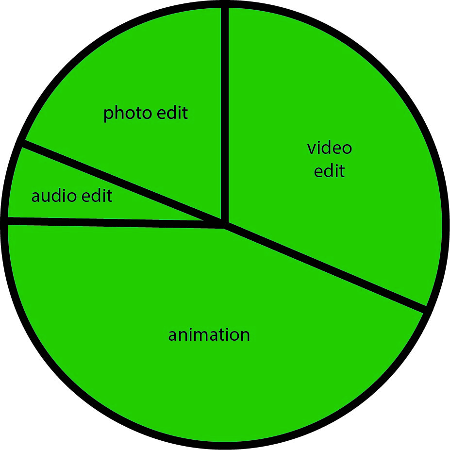

Jackson Litke
Intro
My name is Jackson Litke and I am a second year student at Lethbridge College. I am curently taking multimedia, and plan to go into video game design when I graduate. I was born in Lethbridge, but now live in a really small town called Stirling, which is about thirty minutes away from Lethbridge. When I was younger (around 2 years old) I was diagnosed with autisum. While this has created some challenges for me, it has also made me into the person I am today.
Hobbies
Anime
I am into watching anime. During the pandemic, I found an interest in anime. I just like how it expresses the emotions and feelings of the characters in the form of art. It just makes it look real even though it's not real. The way it shows human nature, and does not hold back, opens my eyes to the reality of things. I personally like the anime made by Type-Moon as I like the plots and stories of the anime. My favorite anime series is Fate Stay Night. I love how it brings in historical figures to fight a war to get a wish granted by the holy grail. All these historical characters come from different lands and eras to fight in the modern world for a wish, that is what makes me like this anime. My favorite anime character is Rin Okumra from Blue Exorcist. He is my favorite character because he is a person trying to fight his destiny and become a hero. Even though he was born the son of Satan he still fights for humanity. I also think he looks cool because of his blue flames and sword. I personally like anime that bring in historical figures like Fate Stay Night, Drifters, and Record of Ragnarök. Like Fate Stay Night, these animes all bring in historical figures from different eras to be the characters in the plots. Drifters brings these characters to a fantasy world filled with elves, beastmen, and dwarves. Record of Ragnarök has these historical characters fight gods for humanity's future.
Cosplay
I also like to make cosplay. During the pandemic I needed a hobby. I thought about it and decided to make a sword. At first it started with a sword but soon it was, masks, guns, and costume pieces. I usually make them out of cardboard and duct tape. One day I would love to go to a Cosplay event like Comicon
Video games
One of my favourite pasttimes is playing videogames. Whenever I am bored or have some free time I play video games to relax and provide myself with some entertainment. Some of my favourite games to play are Mortal Kombat, Assasins Creed, and Star Wars Battlefront because I like how they are open world games.
skills
Photo editing
I am pretty good a editing photos. I sometimes forget the techniques but I always do my best. The best thing about photo editing, is that you can edit a photo to make it look like it is from its own world. If i do not know a certain technique, I will work on the technique until I have mastered it.
Video editing
I am realy good at making vidoes. I can make trailers, music videos and so much more. With my aspirations of being a graphic designer, I believe that my passion for editing video will help me on my journey to do so.
Audio editing
My audio editing skills needs some work, but they are not bad. One of the struggles that I have in audio editing is that sometimes I can talk too fast. When I am nervous/ anxious my speech tends to increase, making it hard to understand me sometimes. Sometimes I also have so many thoughts in my head that I feel like I have to talk about all of them, which can lead me to sometimes getting off topic. I have been working on this so that I can improve in my auto editing.
Animation
I am really good at animation it's a little hard but I do my best. I can make great stuff. I love animation so much, because I can create a story, but the animation is what brings it to life. I work on my drawing skills at least once a day to make my animations look more realistic. I would love to one day create anime that others look up to and look forward to seeing.